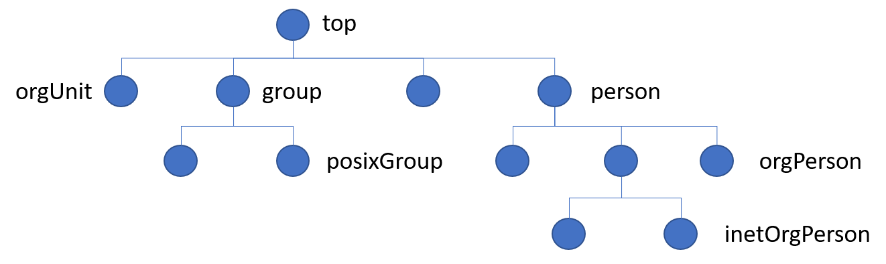
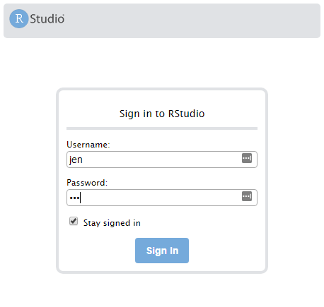

Lab: RStudio Server Pro Security
Quiz: Authentication protocols
Which authentication protocols are supported by RStudio Server Pro?",
Choose five answers from the following list:
- Operating system
- Proxy
- PAM
- LDAP
- Google OAuth
- OAuth 2
- SAML
Answer:
The correct answer is: Operating system, Proxy, PAM, LDAP and Google OAuth.
SAML is not currently supported and OAuth 2 is not supported, though the Google specific variant is. In both cases we recommend you use proxied authentication instead.
Introduction
Imagine that you are in an organization that standardized authentication using the LDAP protocol and openLDAP.
In this exercise, we have provided the LDAP server for you. Your task is to configure RStudio Server Pro to integrate with the LDAP server.
When you are finished, users in the LDAP directory should be able to authenticate into RStudio Server Pro.

This exercise is broken into three parts:
- Explore LDAP and obtain information from the
.ldiffile - Use
sssdto configure your server with LDAP - Use PAM to configure RStudio Server Pro
Remember you will need to use sudo commands throughout this exercise.
Part 1: Get server information
In this part, you get information you need to configure your server with LDAP.
Introduction to ldapsearch
Hint:
-
Use
man ldapsearchto construct your command. -
You can also find the help for
man ldapsearchatr href("https://linux.die.net/man/1/ldapsearch")
Important: The LDAP bind password is admin. You will need this for the next steps.
Use the ldapsearch terminal utility to retrieve an example user from the LDAP credential store. Construct a command with the inputs below.
The most important things you’ll need to know about your LDAP server are:
- hostname or IP address
- LDAP port number
- base bind DN (disinguished name)
This information allows you to write an ldapsearch query in the format:
ldapsearch -h 1.2.3.4 -p 123 -D dc=example,dc=com [query]
In this classroom, the hostname is leader.example.org, and the base bind DN is "admin.example.org".
It will also help to know a few of the LDIF format abbreviations for search criteria in LDAP:
| Code | Meaning |
|---|---|
| dn | distinguished name |
| dc | domain component |
| ou | organizational unit |
| cn | common name |
In these codes:
- The
dnrefers to the distinguished name that uniquely identifies an entry in the directory. - The
dcrefers to each component of the domain. For examplewww.mydomain.comwould be written asdc=www,dc=mydomain,dc=com - The
ourefers to the organizational unit (or sometimes the user group) that the user is part of. A user can be part of more than one group, for example:ou=Lawyer,ou= Judge. - The
cnrefers to the individual object, for example person's name, meeting room, job title, etc.
This means that admin.example.org can be written as cn=admin,dc=example,dc=org.
And now you have the essential information for an ldap query:
| Argument | ldapsearch | Value | Note |
|---|---|---|---|
| Bind Password | -w | admin | |
| Hostname | -h | leader.example.org | |
| Port | -p | 389 | default value, can be omitted |
| Bind DN | -D | cn=admin, dc=example, dc=org | DN means "distinguished name" |
Note that it is considered unsafe to provide passwords on the commandline. Outside of this training course you should use -W to get a password prompt instead.
ldapsearch -w admin -h leader.example.org -D cn=admin,dc=example,dc=org
If you issue this LDAP command, you should get:
# extended LDIF
#
# LDAPv3
# base <> (default) with scope subtree
# filter: (objectclass=*)
# requesting: ALL
#
# search result
search: 2
result: 32 No such object
# numResponses: 1
This query doesn't return any useful information, so you want to restrict the starting point of the query, by setting the searchbase:
| Argument | ldapsearch | Value | Note |
|---|---|---|---|
| Search Base | -b | dc=example, dc=org | Use searchbase as the starting point for the search instead of the default |
ldapsearch -w admin -h leader.example.org -D cn=admin,dc=example,dc=org -b dc=example,dc=org
Note that this returns all elements in the LDAP database!
Returning a single element
Now that you know how to return the entire database, you can add additional elements to the [query].
Remember that the generic query format looks like this:
ldapsearch -h 1.2.3.4 -p 123 -D dc=example,dc=com [query]
And you have already tried
ldapsearch -w admin -h leader.example.org -D cn=admin,dc=example,dc=org -b dc=example,dc=org
By adding a query term at the end, you can search for specific elements.
For example, search for a user named "Joe". You already know that cn indicates the "common name", so try running a query for cn=joe:
ldapsearch -w admin -h leader.example.org -D cn=admin,dc=example,dc=org -b dc=example,dc=org cn=joe
You should get:
# joe, engineering.example.org
dn: cn=joe,dc=engineering,dc=example,dc=org
cn: joe
gidNumber: 5000
givenName: Joe
homeDirectory: /home/joe
loginShell: /bin/sh
mail: joe@example.org
objectClass: inetOrgPerson
objectClass: posixAccount
objectClass: top
sn: Golly
uid: joe
uidNumber: 10000
userPassword:: e01ENX1qL01raWZrdk0wRm1sTDZQM0MxTUlnPT0=
Inspect the output
Each object in an LDAP directory has at least one object class associated with it. The object class determines the characteristics of this object, in particular the set of attributes which the object can have (and the ones it must have).
The object classes are defined in the LDAP directory schema - they constitute a class hierarchy there, there is one central top level class (which is called 'top'), all other classes are derived from that

Repeat your previous ldapsearch command, this time for the user `julie:
ldapsearch -w admin -h leader.example.org -D cn=admin,dc=example,dc=org -b dc=example,dc=org cn=julie
Here is an extract for the user named Julie:
# julie, engineering.example.org
dn: cn=julie,dc=engineering,dc=example,dc=org
cn: julie
gidNumber: 5000
givenName: Julie
homeDirectory: /home/julie
loginShell: /bin/sh
mail: julie@example.org
objectClass: inetOrgPerson
objectClass: posixAccount
objectClass: top
sn: Jolly
uid: julie
uidNumber: 10001
userPassword:: e01ENX1GdkV2WG9ONTRpdnBsZVVGNi93YmhBPT0=
Note, in particular, the objectClass line:
objectClass: inetOrgPerson
objectClass: posixAccount
objectClass: top
This means that users have the attribute: inetOrgPerson, posixAccount and top.
Task: Get a list of all users
You can use your knowledge that users have the attribute inetOrgPerson in a follow-up ldapsearch to get all usernames (uid).
Refine your search to return only inetOrgperson entries:
ldapsearch -w admin -h leader.example.org -D cn=admin,dc=example,dc=org -b dc=example,dc=org objectClass=inetOrgperson
And then refine the search once more to return only the uid entries:
ldapsearch -w admin -h leader.example.org -D cn=admin,dc=example,dc=org -b dc=example,dc=org objectClass=inetOrgperson uid
Note
It is much easier to read and understand the resulting list, making it easier to determine which users are in the system.
Task: Get a specific user
Now you can get the information you need to configure the server. Query LDAP for information about julie. You will use this information in the next step.
ldapsearch -w admin -h leader.example.org -D cn=admin,dc=example,dc=org -b dc=example,dc=org cn=julie
You can expand your query to include all user and operational attributes
ldapsearch -w admin -h leader.example.org -D cn=admin,dc=example,dc=org -b dc=example,dc=org cn=julie \* \+
Explanation:
- This returns all information about a single user.
- Searching with
\*shows all user attributes - Searching with
\+shows all operational attributes
In the results:
entryUUIDis the unique identifier of a record in openLDAP
Users and groups
What is the difference between a user and a group in this LDAP server?
- Specifically, if you look at an LDAP directory entry, how do you tell if it is a user or a group entry?
As an example, here is the entry for julie:
ldapsearch -w admin -h leader.example.org -D cn=admin,dc=example,dc=org -b dc=example,dc=org cn=julie \* \+
# julie, engineering.example.org
dn: cn=julie,dc=engineering,dc=example,dc=org
structuralObjectClass: inetOrgPerson
entryUUID: 3a204884-2507-1039-83ea-df23cd78e201
creatorsName: cn=admin,dc=example,dc=org
createTimestamp: 20190617045051Z
entryCSN: 20190617045051.770037Z#000000#000#000000
modifiersName: cn=admin,dc=example,dc=org
modifyTimestamp: 20190617045051Z
entryDN: cn=julie,dc=engineering,dc=example,dc=org
subschemaSubentry: cn=Subschema
hasSubordinates: FALSE
And this is the entry for engineering_group:
ldapsearch -w admin -h leader.example.org -D cn=admin,dc=example,dc=org -b dc=example,dc=org cn=engineering_group \* \+
# engineering_group, example.org
dn: cn=engineering_group,dc=example,dc=org
structuralObjectClass: posixGroup
entryUUID: 3a1a7ff8-2507-1039-83e4-df23cd78e201
creatorsName: cn=admin,dc=example,dc=org
createTimestamp: 20190617045051Z
entryCSN: 20190617045051.732134Z#000000#000#000000
modifiersName: cn=admin,dc=example,dc=org
modifyTimestamp: 20190617045051Z
entryDN: cn=engineering_group,dc=example,dc=org
subschemaSubentry: cn=Subschema
hasSubordinates: FALSE
Task:
- Identify the attributes that might indicate that
julieis a person andengineering_groupis a group
Hint: look at the differing values for structuralObjectClass
Part 2: Configure server
In this part, you configure your server with sssd.
Task: Create sssd.conf file
sssd helps you integrate your Linux system with LDAP. The configuration template is in your workshop materials.
Important: You can find the workshop materials at /usr/share/class/pro_admin_training_assets/.
Tasks:
- Copy the configuration template
s-template.txtto/etc/sssd/sssd.conf.
Show me how...
sudo cp /usr/share/class/pro_admin_training_assets/s-template.txt /etc/sssd/sssd.conf
Task: Edit the sssd.conf file
Task:
- Fill out the missing values in
sssd.confusing the example output from the LDAP server in the previous task
These are the values you must complete:
ldap_user_object_class = posixAccount
ldap_user_name = cn
ldap_user_uuid = entryUUID
ldap_user_shell = loginShell
ldap_user_home_directory = homeDirectory
ldap_user_uid_number = uidNumber
And the meaning of these fields (source)
| Configuration option | The LDAP attribute that... |
|---|---|
| ldap_user_object_class | specifies the object class of a user entry in LDAP |
| ldap_user_name | corresponds to the user's login name |
| ldap_user_uuid | contains the UUID/GUID of an LDAP user object. |
| ldap_user_shell | contains the path to the user's default shell. |
| ldap_user_home_directory | contains the name of the user's home directory |
| ldap_user_uid_number | corresponds to the user's id |
If you get stuck, you can find a full example configuration of sssd.conf in s-answer.txt.
Task: Test sssd is working
Next, restart the sssd service:
sudo chown root:root /etc/sssd/sssd.conf
sudo chmod 600 /etc/sssd/sssd.conf
sudo systemctl restart sssd
sudo systemctl status sssd
To test that sssd is working correctly, try:
id julie
Make sure that the information matches with the ldap search for Julie:
ldapsearch -w admin -h leader.example.org -D cn=admin,dc=example,dc=org -b dc=example,dc=org cn=julie
Consider these questions:
- Did you get meaningful output?
- If you did, try a few more users from the LDAP system. Do these users exist on your system?
- Where is the information coming from?
Signs of success: sssd configured
You have successfully configured your server to recognize LDAP. PAM can now call the sssd service and find users in the LDAP directory.
The next step is to configure RStudio Server Pro with PAM.
Part 3: Configure RSP
In this part, you configure RStudio Server Pro to connect to LDAP via PAM.
Task: Set up PAM Profiles
RStudio Server Pro supports PAM sessions. The PAM sessions work with sssd to authenticate users.
Tasks
-
Copy the following files (Remember: workshop materials are under
/usr/share/class/pro_admin_training_assets/.):What From: To: PAM profile rstudio-sssd/etc/pam.d/rstudioPAM profile rstudio-session-sssd/etc/pam.d/rstudio-session -
Edit the
/etc/rstudio/rserver.conffile. Add the following line:
auth-pam-sessions-profile=rstudio-session
Explanation
- PAM offers flexible control over system level authentication
- Specific PAM exploration is outside of the bounds of this course
- Open each file and explore the contents
Task: Test authentication
You can use the pamtester utility to test the PAM profile for a specific user. You cand find documentation for pamtester here
In this classroom, the password for every user is the same as their user name. For example:
- User: jen
- Password: jen
Task
- Use the
pamtesterutility to test authentication forjen:jen
sudo /usr/lib/rstudio-server/bin/pamtester --verbose rstudio jen authenticate
- Enter the password.
You should get:
pamtester: successfully authenticated
Task: Create user accounts
Every RStudio Server user must have a home directory.
From the r href("admin guide", "https://docs.rstudio.com/ide/server-pro/authenticating-users.html"):
R users require local system accounts regardless of what RStudio authentication method you use. You should set up local system accounts manually and then map authenticating users to these accounts. You can also use PAM Sessions to mount your user home directory to the server.
- If a user does not have a home directory, they will get a
system error 13 (Permission Denied)message in their browser when they try to log in
(It is possible to use the rstudio-session PAM profile to create home directories automatically when a user logs into the server, but that's outside the scope of this course.)
Tasks:
- Create a local system account for the user
jen
sudo mkdir /home/jen
sudo chown jen: /home/jen
Why does this work?
The linux command chown changes the ownership of a file or folder. The typical syntax is chown username:groupname ... and you have to specify the new username as well as the new groupname.
However, there is special syntax for chown that allows you to omit either the username or the groupname.
In this example, chown jen: omits the groupname, and then the behaviour of chown is to substitute the default groupname.
You can read more in the manual pages for linux, also known as the "man pages", by typing:
man chown
Signs of success: RStudio works
Tasks:
Restart RStudio Server
-
Refer to the admin guide, section 2.1.2 Stopping and Starting
-
To manually stop, start, and restart the server you use the following commands:
sudo rstudio-server stop
sudo rstudio-server start
or just:
sudo rstudio-server restart
To check the current stopped/started status of the server:
sudo rstudio-server status
Log into RStudio Server Pro in your browser using one of the users from the LDAP Server.
- Important: Since RStudio Server Pro now authenticates only users in LDAP, you must log in as one of those users
- Also, a user home folder must exist, so make sure you've created a home folder!
- practically speaking, this means you must log in as
jen, since you created a home folder forjenin the previous step

Remember:
In this classroom LDAP server, user passwords are the same as the username, i.e. jen:jen, julie:julie, joe:joe, etc.
Once you have logged in successfully, you have completed this portion of the exercise!
Failure ?!
Some things that could go wrong:
- You get the warning message:
WARNINGS: The auth-pam-sessions-enabled option requires the PAM profile /etc/pam.d/rstudio-session however that profile does not exist. Disabling support for PAM sessions.
This means you forgot to copy the PAM Profile files in the task "Set up PAM profiles", OR you didn't edit the /etc/rstudio/rserver.conf file.
-
You forgot the URL for your RStudio Server Pro sesion
-
Go back to
r href("https://rstd.io/class")and bookmark the landing page. -
You logged in as
admin-user -
Remember that you now use LDAP to authenticate, and
admin-useris not an authenticated user in LDAP - Log in as a user that exists, and that has a home folder, e.g.
jen
Closing thought: Security best practices
Some notes:
- In this course we supplied a demonstration
sssdconfig file (s-answer.txt), and in this example file encryption is specifically disabled. - Note that this is a test setup, without encryption enabled and that’s not suggested for anything but testing, as your credentials will pass over the wire in plain text!
- In your own environment, you should get a security expert to review your configuration.